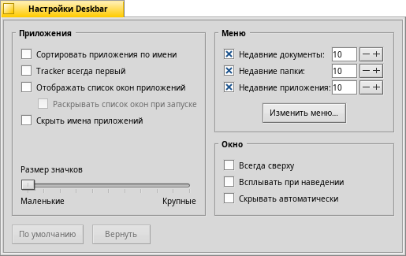

Русский
Русский Català
Català Deutsch
Deutsch English
English Español
Español Français
Français Italiano
Italiano Magyar
Magyar Polski
Polski Português
Português Português (Brazil)
Português (Brazil) Română
Română Slovenčina
Slovenčina Suomi
Suomi Svenska
Svenska 中文 ［中文］
中文 ［中文］ Українська
Українська 日本語
日本語| Содержание |
|
Меню Трей Список запущенных приложений |
Deskbar
Deskbar - это маленькая панель, которая по умолчанию располагается в правом верхнем углу экрана. Это аналог панели задач с кнопкой Пуск из Windows. Она содержит меню, из которого Вы можете запустить приложения и настройки, трей с часами и снизу - список запущенных приложений.

Вы можете переместить Deskbar в любой угол, либо расположить на всю верхнюю\нижнюю границу экрана (как в Windows), ухватив за шероховатую область, расположенную слева от трея. Вы также можете свернуть эту панель в более компактную, ухватив за шероховатую область и потянув в сторону меню Deskbar.
 Меню
Меню
Меню раскроется после того, как вы щелкните мышью по верхней области Deskbar:

О системе Haiku - Показывает информацию о системе, лицензиях и проекте Haiku.
Найти... - Открывает диалог запросов.
Отображать репликанты - Активирует\деактивирует отображение репликантов.
Подключить - Предлагает те же самые опции, что и меню при правом щелчке мыши по Рабочему столу (для более подробного изучения обратитесь к теме Подключение разделов).
Настроить Deskbar... - Открывает окно с настройками Deskbar (описано ниже).
Завершение работы... - Предлагает опции: и .
Недавние документы, папки, приложения - Список недавно открытых документов, папок и приложений.
Applications, Demos, Deskbar applets, Preferences - List of installed applications, demos, applets and preferences.
You can add links to other programs (or any folder, document, query etc.) by putting them into ~/config/settings/deskbar/menu/.
Настройки Deskbar

The Deskbar preference panel is devided into three sections.
Applications
The following settings don't apply to your installed applications, but to the behavior and visuals of the list of running applications.
| Sorts the list of running programs alphabetically. | ||
| Even if you sort alphabetically, the Tracker entry always stays first in the list. | ||
| Provides a small widget to show/hide all windows of a program directly under its entry in the Deskbar. | ||
| Newly launched programs have their windows automatically expanded under their entry in the Deskbar. | ||
| Removes the text labels of running applications. | ||
| Adjusts the icon size of running applications. |
Menu
While the first couple of menu items of the Deskbar are fixed, you can customized the ones below .
Here you can set the number of recent documents, folders and applications that are shown in their menu in the Deskbar, or if you want to see them at all.
The button opens the folder ~/config/settings/deskbar/menu/. In it you'll find the files and folders that appear in the Deskbar, by default these are , , , and .
You can delete or add entries like links to applications, documents or even queries by simply copying/deleting them to/from this folder.
Programs installed from a package automatically put an entry into the Deskbar. Depending on the number of packages you have installed, this can become a bit crowded. If you prefer to have total control, and only want to see applications you link there yourself (possibly in categorizing sub-folders), here's how to do it:
You create a link of the menu folder in ~/config/settings/deskbar/ and rename to menu_entries. From Terminal that is achieved with:
ln -s ~/config/settings/deskbar/menu ~/config/settings/deskbar/menu_entries
Window
Finally, the preferences for the Deskbar window.
| The Deskbar always stays above all other windows. | ||
| The Deskbar pops to the front if the mouse pointer touches it. | ||
| The Deskbar is reduced to only a few pixels and only pops up if the mouse pointer touches them. |
Трей

Помимо всего прочего в трее располагаются часы. Наведите курсор мыши на часы и вы увидите текущую дату. Левый щелчок мыши по часам вызовет календарь. Правый щелчок мыши по часам вызовет контекстное меню, из которого можно запустить настройку времени, даты и временной зоны.
А также позволит скрыть отображение часов.
Любая программа может установить иконку в трей для обеспечения быстрого доступа. Почтовый клиент, например, отображает другую иконку, когда у Вас есть непрочитанные письма и предлагает контекстное меню, например создание письма для отправки, для проверки почты. Другим примером является Контроллер процессов, использующий иконку в трее, которая отображает нагрузку процессора и использование памяти, а также предлагает контекстное меню.
Список запущенных приложений

You can change to a specific running application by clicking on its entry in the Deskbar and choosing (one of) its windows from the submenu. By right-clicking you can windows or and with them the entire application.
A SHIFT CTRL click on an application hides all its windows, a CTRL click shows them again.
Если вы активировали отображение экспандеров в настройках Deskbar, то можете разворачивать/сворачивать список окон приложения.
Перед каждым окном приложения находится иконка, которая отображает состояние окна. Светлая иконка означает, что окно развернуто, темная - свернута. Три полоски перед иконкой означают, что окно находится на другом рабочем столе.